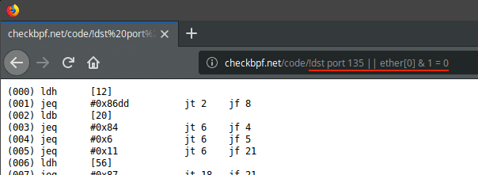

Use these API endpoints to check BPF syntax. Browser javascript can use this, which is its advantage over a local utility.
/status/{filter} Check whether a capture filter is valid (e.g. checkbpf.net/status/ip arp)/code/{filter} Get the a capture filter's BPF code (e.g. checkbpf.net/code/!dst port 135 || ether[0] & 1 = 0)You can paste the capture filter after /status or /code and you should get a useful response. Note how symbols and spaces are used in the url query.
Wireshark is also a great resource for Capture Filter usage.
For any endpoint, wget can be used or the filter can be pasted directly in the browser
Showing "arp" and "ip arp", which are valid and invalid capture filters respectively.
$ wget -qO- 'checkbpf.net/status/arp'
{"valid":"true","error":""}
$ wget -qO- 'checkbpf.net/status/ip arp'
{"valid":"false","error":"syntax error in filter expression: syntax error"}
This capture filter matches the Blaster Worm.
$ wget -qO- 'checkbpf.net/code/dst port 135 and tcp port 135 and ip[2:2]==48'
(000) ldh [12]
(001) jeq #0x86dd jt 14 jf 2
(002) jeq #0x800 jt 3 jf 14
(003) ldb [23]
(004) jeq #0x84 jt 14 jf 5
(005) jeq #0x6 jt 6 jf 14
(006) ldh [20]
(007) jset #0x1fff jt 14 jf 8
(008) ldxb 4*([14]&0xf)
(009) ldh [x + 16]
(010) jeq #0x87 jt 11 jf 14
(011) ldh [16]
(012) jeq #0x30 jt 13 jf 14
(013) ret #262144
(014) ret #0
Similar to "ip arp", we can test /code with invalid capture filters:
$ wget -qO- 'checkbpf.net/code/dst port 66666'
QUERY ERROR
That string isn't a valid capture filter (illegal port number 66666 > 65535).
See the User's Guide for a description of the capture filter syntax.
You can use curl with a query key of 'q' to urlencode characters. It is unlikely that you would need to use this though as the characters that are harder to encode cannot be parsed as bpf syntax anyway. The following bash example queries with all printable ASCII characters and shows invalid ones.
$ ASCII="$(python -c "print(''.join(chr(x) for x in range(31,127)))")"
$ echo $ASCII
!"#$%%&\'()*+,-./0123456789:;<=>?@ABCDEFGHIJKLMNOPQRSTUVWXYZ[\]^_`abcdefghijklmnopqrstuvwxyz{|}~
$ curl -L -G 'checkbpf.net/status/' --data-urlencode q="${ASCII}" && echo
{"valid":false,"error":"Invalid BPF Characters:[\"#$%%'*+,/;?@^_`{}~]"}